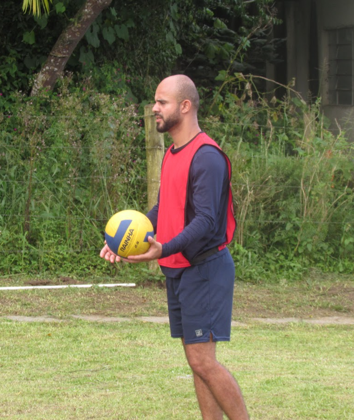
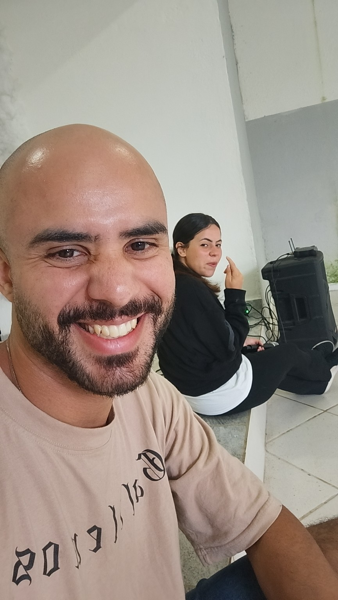

Meus Projetos
Portfólio Pessoal
Desenvolvimento deste site utilizando HTML5, CSS3 e JavaScript puro.
Suporte Técnico Autônomo
Atendimento técnico com manutenção de desktops e notebooks, instalação de softwares e configuração de dispositivos.
Projeto Social Multimídia
Atuação voluntária em operação de áudio, vídeo e coordenação de equipe multimídia em eventos sociais.
Design e Social Media
Criação de mídias sociais utilizando Photoshop, Illustrator e ferramentas de edição visual.

